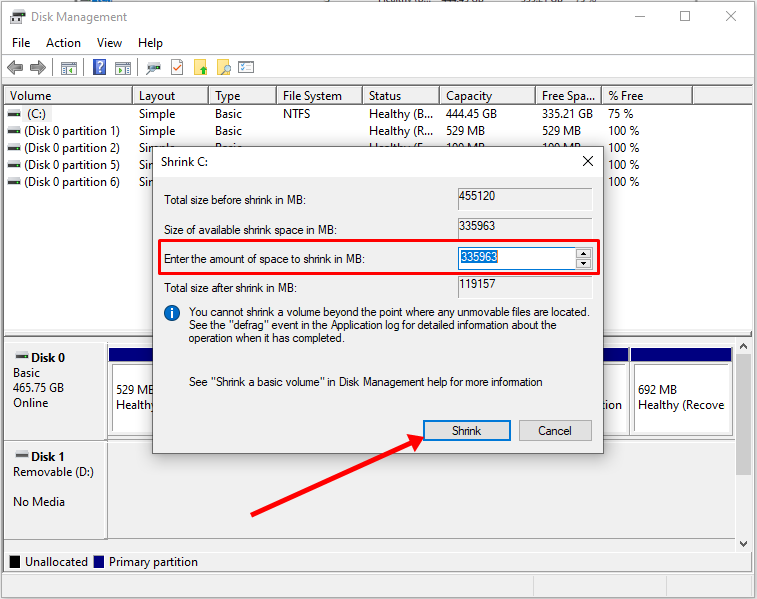

You don’t have to have two different computers to use Linux and Windows 10. It's possible to have a Linux distro installed on a computer with Windows 10 preinstalled.
In this article, I will show you how to dual boot Windows 10 and the popular Ubuntu Linux distro. But before that, you have to install Ubuntu on your Windows 10 PC.
Before you go through this process, you must backup your files. That’s because installing an OS is a risky process. Sometimes it can overwrite the existing OS and delete all your files.
N.B.: Most of the processes in this article take time to get done, so you need to be patient.
What We’ll Cover – A step-by-step Guide to Dual-Booting Windows 10 and Linux
- Prerequisites
- How to Partition your Hard Drive for Ubuntu
- How to Optimize your Hard Drive for More Partition Space (Optional)
- How to Download Ubuntu in ISO Image Format
- How to Make an Ubuntu (Linux) Bootable USB Drive
- How to Install Ubuntu Linux Distro along with Windows 10
- Now You Can Dual Boot Ubuntu and Windows 10
- Conclusion
Prerequisites
Most importantly, there are some things you must have in place if you want to use (and dual boot) Ubuntu and Windows 10 on the same PC:
- A computer preinstalled with Windows 10
- A partitioned hard drive
- A BIOS in UEFI mode (Unified Extensible Firmware Interface)
- An empty USB drive of at least 4Gig for creating a bootable disk
- An internet connection to download Ubuntu ISO image (the Linux distro) and Rufus (a bootable drive creation tool)
How to Check If Your PC BIOS is in UEFI Mode
To check if your PC BIOS comes in UEFI mode, search for “system information” and hit ENTER.

Look under BIOS mode to confirm that your PC BIOS mode comes as UEFI.
If your PC BIOS is not in UEFI mode, the two operating systems won’t see each other. You can learn more about the difference between these two modes here.
How to Partition your Hard Drive for Ubuntu
You have to partition your hard drive because you must set aside at least 20Gig for Ubuntu to live in and boot from.
To partition your hard drive, follow the steps below:
Step 1: Right-click on Start and select “Disk Management”.
Step 2: Right-click on your C drive and select shrink volume.
Step 3: Select at least (20000) 20Gig for Ubuntu and click “Shrink”. IT can take some time to complete, so be patient.

Step 4 (optional): You can go ahead and assign a letter to the new volume. Right-click on the unallocated space and select “New Simple Volume”.
Step 5: Follow the wizard and assign a letter to the drive, then follow the rest of it.
After completing the wizard, the drive should be listed on your computer.
Congrats! You’ve successfully partitioned your hard drive.
N.B.: If you have a lot of free space in your hard drive but your PC still didn’t give you up to 20Gig partition space, then you need to optimize your PC’s hard drive. Proceed to the next section of this article to do that.
How to Optimize your Hard Drive for More Partition Space (Optional)
The common purpose of hard disk optimization is to speed up your computer during boot time and make it run smoother.
At the same time, the process will defragment the hard disk and make free space more available for partitioning.
To optimize your hard drive, click Start (Windows logo key), search for “defrag” and select “Defragment and Optimize Drives”.
Make sure your C drive is highlighted, then click “Optimize”.
After you’ve been able to set aside at least 20Gig for Ubuntu by partitioning your hard drive, then it’s time to download Ubuntu and make a bootable USB.
How to Download Ubuntu in ISO Image Format
The next thing is to download Ubuntu in ISO image format so you can install Ubuntu. You can download it from the Ubuntu distro website.
After downloading Ubuntu, don’t do anything with it yet. You need to make a bootable USB and put it in there. That’s how you’ll be able to use it.
The reason you can’t install Ubuntu just like that is that it doesn’t come as an executable. It comes in form of ISO (optical disk image). That means you have to find a disk to put it in before it can work.
The next part of this guide shows how you can put the downloaded Ubuntu ISO on a USB stick.
How to Make an Ubuntu (Linux) Bootable USB Drive
You won’t be able to make a bootable USB drive for Ubuntu by just placing the downloaded ISO image in it. Follow these steps to get it done:
Step 1: You need to download a bootable USB drive creation tool like Rufus. You can download Rufus from their website.
Step 2: Insert the empty USB drive into your Windows 10 PC. Right-click on Rufus and select “Open”.
Step 3: Under “Device”, select your USB drive. And under “Boot selection”, click the “Select” button and select the Ubuntu ISO file you downloaded
Step 4: Leave every other thing as default and click the “START” button to start burning the Ubuntu distro to the drive.
Step 5: Click OK to start the process.
Once the process is done, you should see “READY” on a green background. Click the Close button. Its time to install Ubuntu.
Congrats! Now you have a bootable drive with which you can install Linux.
The next step is to install the Ubuntu distro on your Windows 10 PC. To do this, you have to boot your PC from the bootable USB drive you created.
How to Install Ubuntu Linux Distro along with Windows 10
Step 1: Ensure the bootable drive is inserted into your Windows 10 PC
Step 2: Right-click on Start, hold SHIFT, and select Restart.
Step 2: Select “Use a Device”.
Step 3: On the next screen, you should see several devices you can boot from.
You may see the bootable drive as the name of the USB brand.
It’s possible to see it as “Ubuntu” too. Some other times, you might not see it, so you need to click on “See more devices".
If you still cannot see your bootable drive, head over to your boot menu by getting into BIOS. You will see it there.
N.B.: You should be very careful while making changes in BIOS. Whatever you do there has a lasting effect on your computer. If you are not sure of what you're doing there, you should contact an IT professional.
Step 4: Choose "Install Ubuntu". You can also try it before installing it.
Follow other prompts of the installation wizard and make sure you don’t replace your Windows 10 OS installation with Ubuntu. This is why I suggested you back up all your files.
When you get to the point to select the partition you made, scroll to the partition you made earlier and press ENTER.
Click OK to select all the space in the partition.
This time around, the “Install now” button will not be greyed out anymore.
Follow other prompts until Ubuntu starts installing.
After the installation is done, Ubuntu will prompt you to remove the bootable drive and press ENTER to reboot your Computer.
Now You Can Dual Boot Ubuntu and Windows 10
Immediately after you reboot the computer, you should see a screen that looks as shown below:
Now, you can select which one to boot into between Ubuntu and Windows 10.
To boot into Ubuntu, select Ubuntu. And to boot into Windows 10, select Windows boot manager.
You can also get into your BIOS from the same place by choosing UEFI Firmware Settings.
Conclusion
I hope this article helps you dual boot Ubuntu and Windows 10 on your computer.
The ultimate aim of this article was to show you how to dual boot Ubuntu and Windows 10.
But the article went beyond that to show you how to:
- check if your PC’s BIOS is in UEFI mode
- partition your hard drive
- optimize your hard drive
- make a bootable USB drive
- install Ubuntu Linux Distro along with Windows on your Windows 10 PC.
If you find this article helpful, kindly share it with your friends and family.